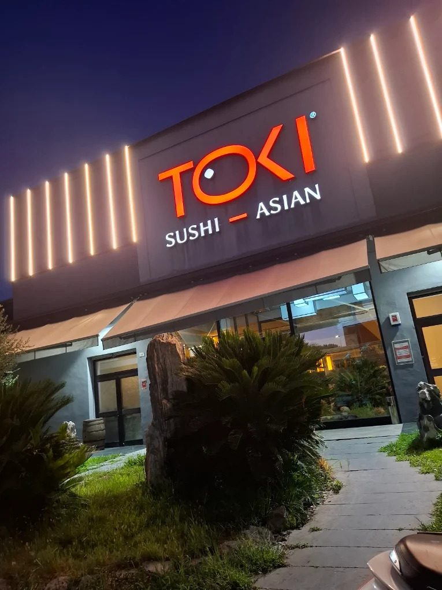

Home · Contatti
Prenota il tuo tavolo o contattaci per informazioni, gruppi ed eventi.
| Lun — Ven | 12–15 · 19–00 |
| Sabato | 12–15 · 19–00 |
| Domenica | 12–15 · 19–00 |
Aperti tutti i giorni
Prenota con una telefonata o su WhatsApp. Preferisci restare a casa? Ordina a domicilio dai tuoi servizi di consegna preferiti.
40128 Bologna (BO) · Quartiere Navile
Aperti tutti i giorni · Pranzo 12–15 · Cena 19–00
Apri su Google Maps →